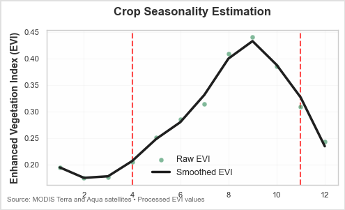
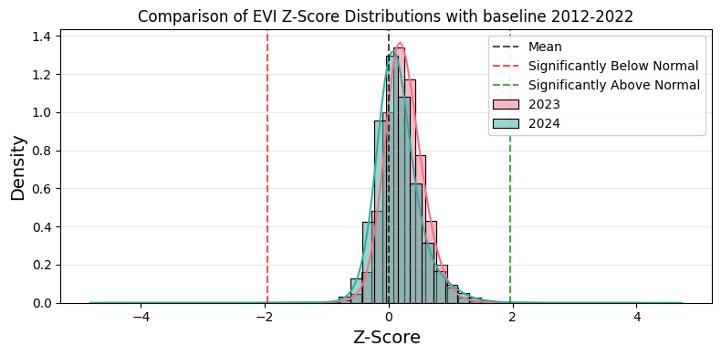
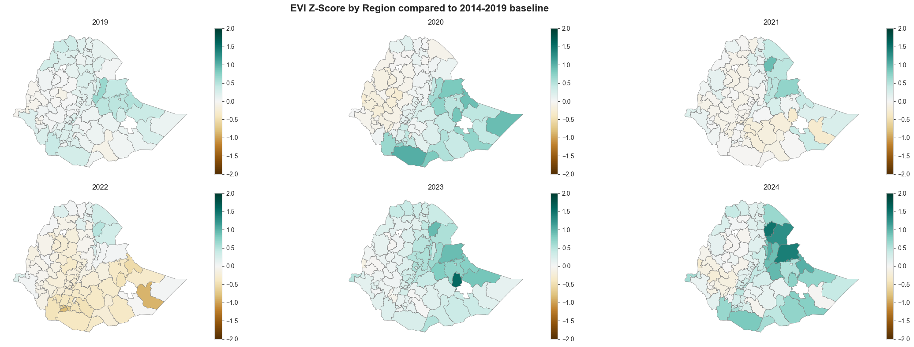
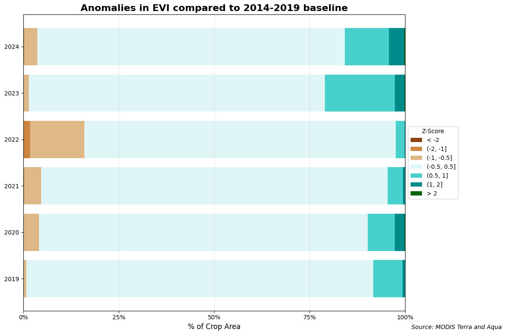
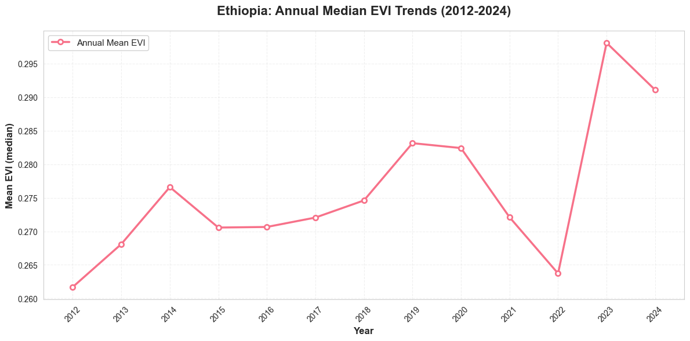
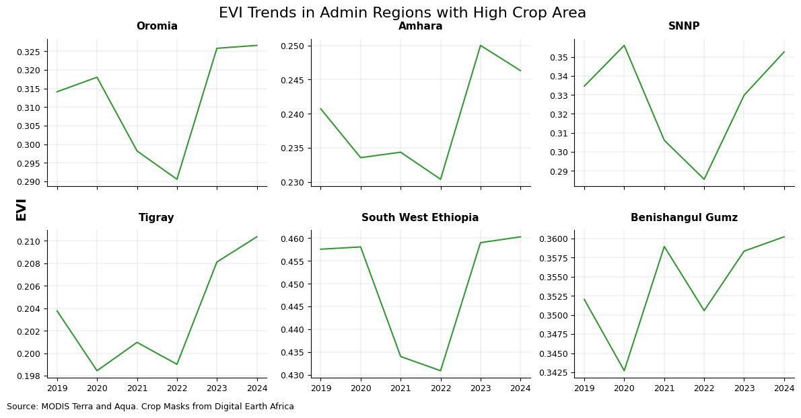
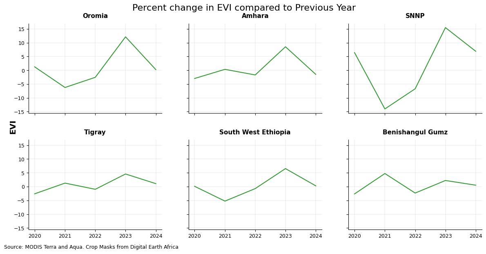
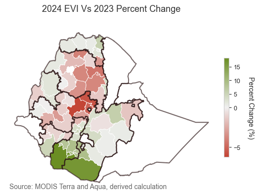
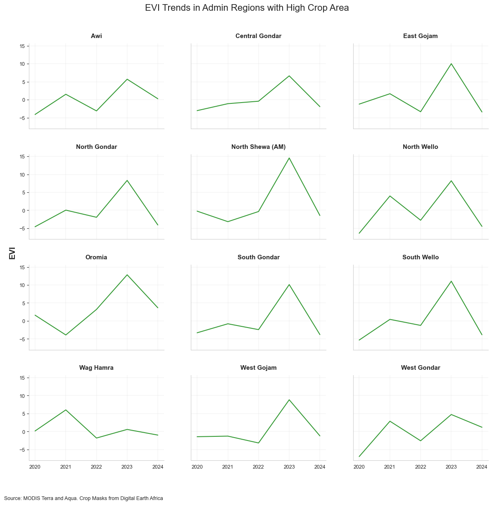
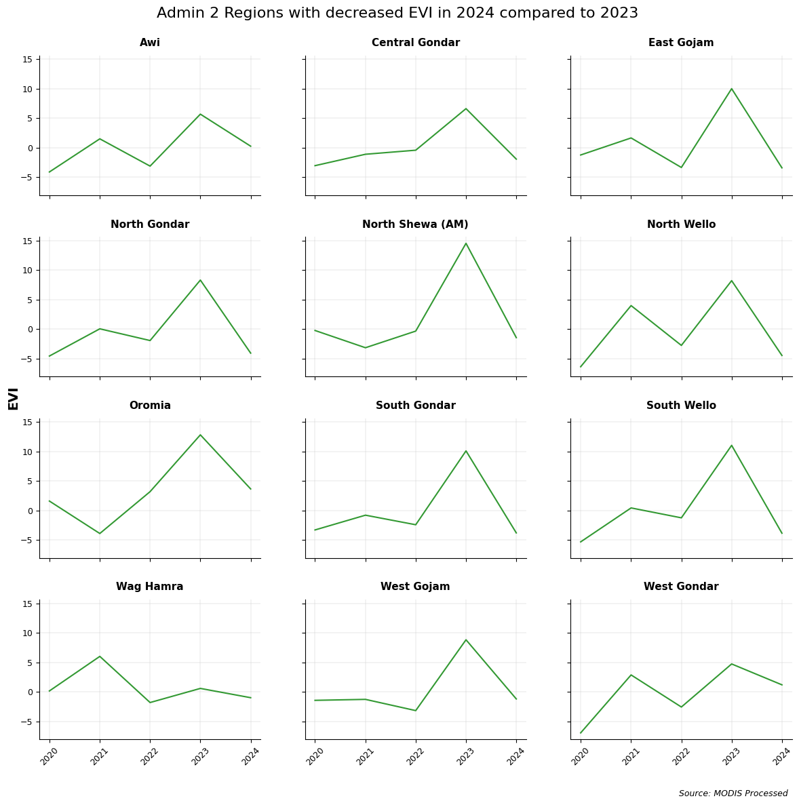

Ethiopia Crop Yield Analysis#
This notebook uses Enhanced Vegetation Index (EVI) from MODIS as a proxy for crop yield. EVI measures canopy greeness by analyzing spectral data through satellite imagery. EVI serves as a proxy for crop yield because it measures photosynthetic activity and green biomass, which strongly correlate with a crop’s potential productivity and final harvest output.
Methodology Summary#
Download imagery from MODIS for Ethiopia from 2012-2024.
Get Crop Mask data for Ethiopia from Digital Earth Africa
Estimate area of crop land in each admin region
Use 2021-2023 data as a baseline to identify growing season in Ethiopia
Use the growing season to track difference in EVI in 2024 compared to a 10 year average (2012-2022)
Plot trends in EVI over the last decade
MODIS
We utilize Google Earth Engine to access the Enhanced Vegetation Index (EVI) band from the MODIS satellite. By combining data from Terra and Aqua, we obtain a map of EVI at 250 meters resolution every 16-days from 2012 to 2024.
The enhanced vegetation index (EVI) is an ‘optimized’ vegetation index designed to enhance the vegetation signal with improved vegetation monitoring through a de-coupling of the canopy background signal and a reduction in atmosphere influences.
We apply the necessary data masking steps:
Mask out bad quality data (shadows/clouds)
Mask out non-crop areas using the DEA crop layer.
Findings#
Croparea Statistics#
| Region | Crop Area ha. | Crop Area Share (% of Country) | Crop Area Share (% of Region) | |
|---|---|---|---|---|
| 0 | Oromia | 10,090,333 | 42.00% | 36.55% |
| 1 | Amhara | 6,429,973 | 26.76% | 48.91% |
| 2 | SNNP | 2,298,187 | 9.57% | 41.02% |
| 3 | Tigray | 2,092,136 | 8.71% | 44.66% |
| 4 | South West Ethiopia | 1,343,857 | 5.59% | 41.75% |
| 5 | Benishangul Gumz | 918,617 | 3.82% | 18.78% |
| 6 | Sidama | 349,321 | 1.45% | 53.70% |
| 7 | Gambela | 191,895 | 0.80% | 7.19% |
| 8 | Somali | 175,187 | 0.73% | 0.58% |
| 9 | Afar | 106,551 | 0.44% | 1.18% |
| 10 | Addis Ababa | 15,120 | 0.06% | 27.57% |
| 11 | Harari | 6,646 | 0.03% | 18.34% |
| 12 | Dire Dawa | 6,416 | 0.03% | 6.19% |
Crop Seasonality#
Using this time series dataset of EVI images, we apply several pre-processing steps to extract critical phenological parameters: start of season (SOS), middle of season (MOS), end of season (EOS), length of season (LOS), etc. This workflow is heavily inspired by the TIMESAT software, although in this implementation we use the Phenolopy open-source package.
Pre-processing steps
Remove outliers from dataset on per-pixel basis using median method: outlier if median from a moving window < or > standard deviation of time-series times 2.
Interpolate missing values linearly
Smooth data on per-pixel basis (using Savitsky Golay filter, window length of 3, and polyorder of 1)
Phenology Process
We then extract crop seasonality metrics using the seasonal amplitude method from the phenolopy package.
The chart below shows the result of this process for a single crop pixel. The green dots represent the raw EVI values, the black line represents the processed EVI values, and the red dotted lines represent season parameters extracted for that pixel: start of season, peak of season, and end of season.

Based on the phenology process, we identified the seasonality to start in April/May and end in December with the peak being in September. This can vary with geographic region and crop type as well, however, that has not been taken into consideration in this version.
Anomalies in EVI#
Anomalies are calculated using z score values.
Where:
\(z\) is the z-score (standard score)
\(x\) is the individual median EVI value
\(\mu\) is the mean of the median EVI values
\(\sigma\) is the standard deviation of the median EVI values
The higher the variation the greater the anomaly i.e., if the value is -1 then the EVI for that time period is far lesser than the normal and vice versa.
The Z scores are calculated for 2023 and 2024 compared to a historic 10 year average. They are then displayed as a histogram, a map and an aggregated map.
Statistical Summary:
--------------------------------------------------------------------------------
File Mean Median Std -1.96% +1.96%
--------------------------------------------------------------------------------
2023 0.246 0.228 0.323 0.0 0.0
2024 0.156 0.118 0.370 0.0 0.1
--------------------------------------------------------------------------------

Statistical Summary:
--------------------------------------------------------------------------------
File Mean Median Std -1.96% +1.96%
--------------------------------------------------------------------------------
2023 0.236 0.210 0.366 0.0 0.1
2024 0.143 0.096 0.432 0.0 0.2
--------------------------------------------------------------------------------

2024 saw anomalies in the agriculture heavy areas of Ethiopia. 2022 was a drought year which explains the deviation from baseline.
Loaded data for years: [2019, 2020, 2021, 2022, 2023, 2024]

2023 was a very good year from agricultural output in Ethiopia. Although 2024 shows better values than 2022, there were a few areas with anomalies.
Trends in Median EVI#

There is an increasing trend in EVI in Ethiopia since 2012. However, the dip during the Tigray war and now during the Amhara war is evident.
Admin 1 EVI Trends#


Admin 2 EVI Trends#

Which areas in Amhara had the greatest decline in EVI?
Which areas saw the highest reduction in EVI amongst all the admin 2 regions?

